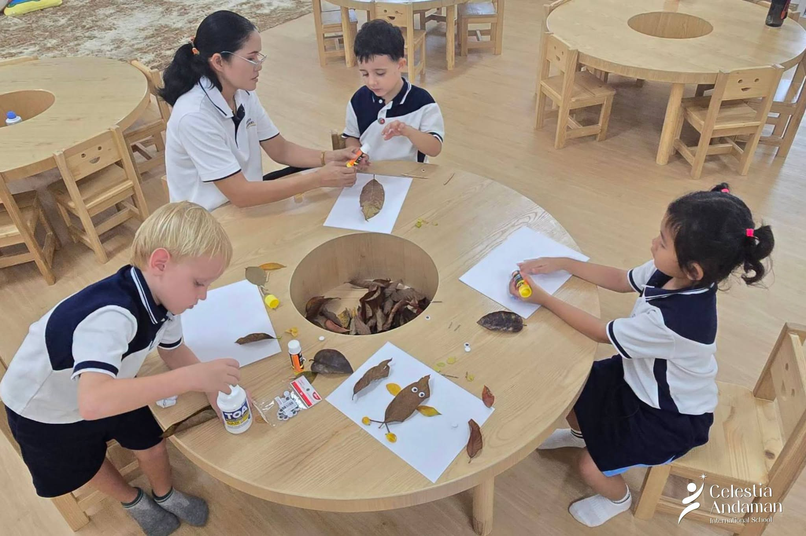
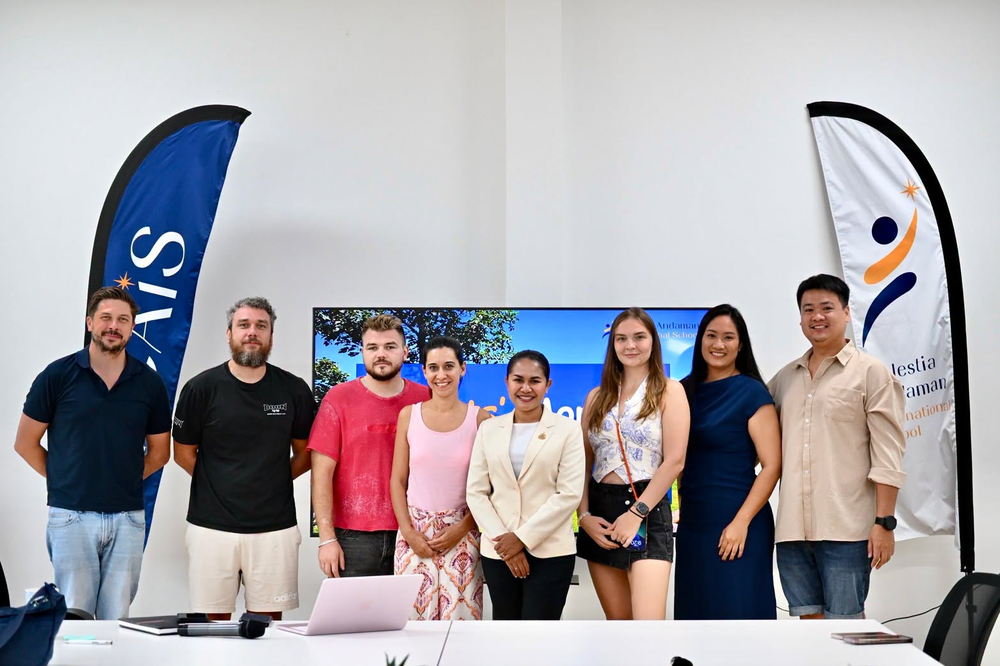
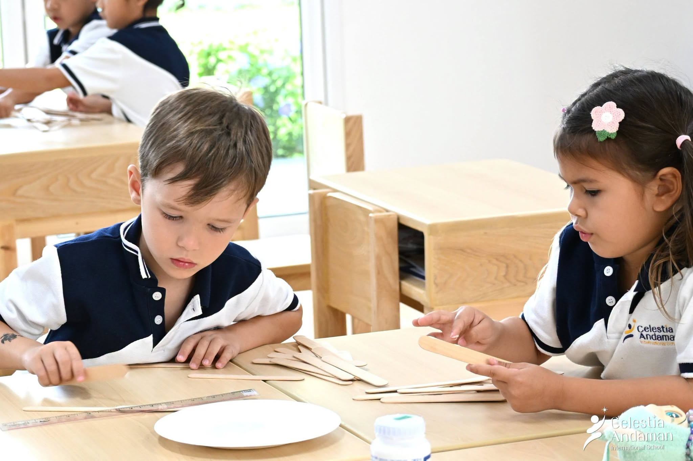
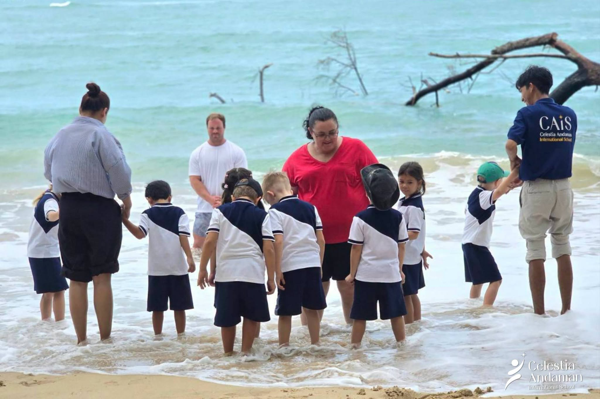
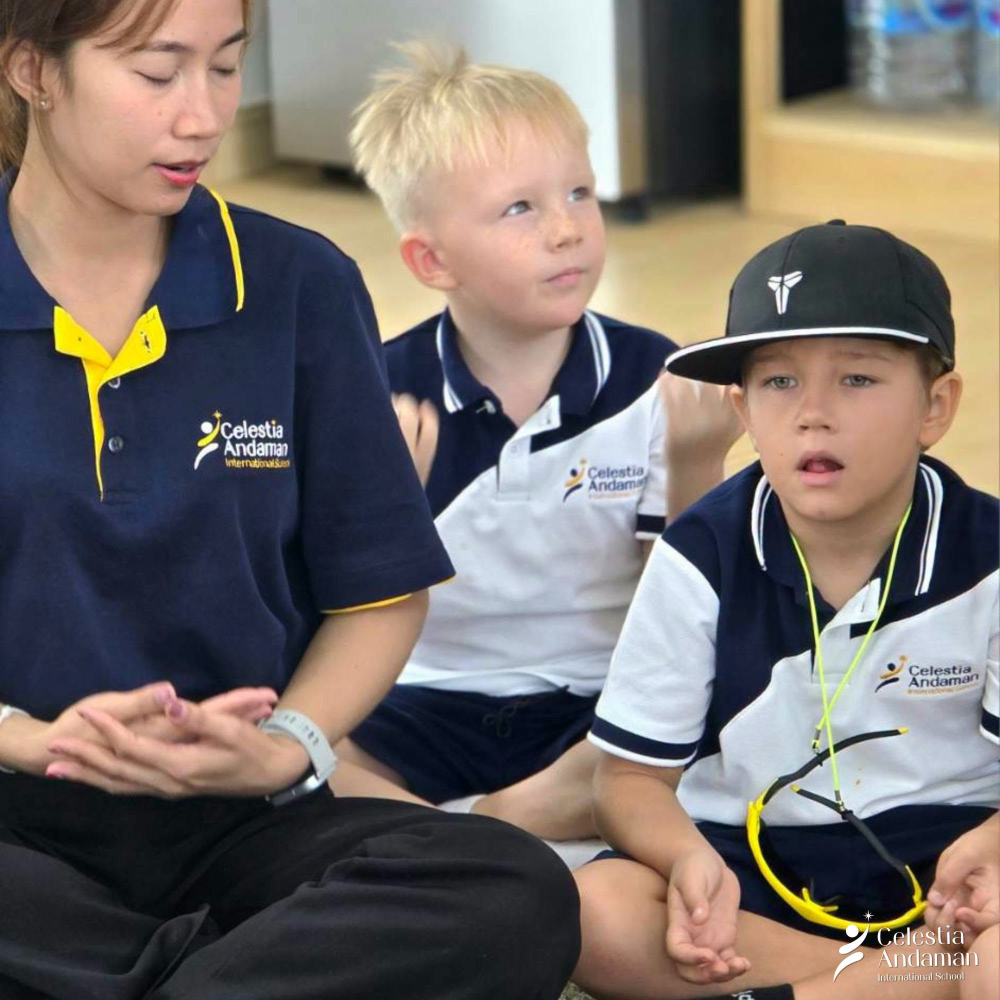
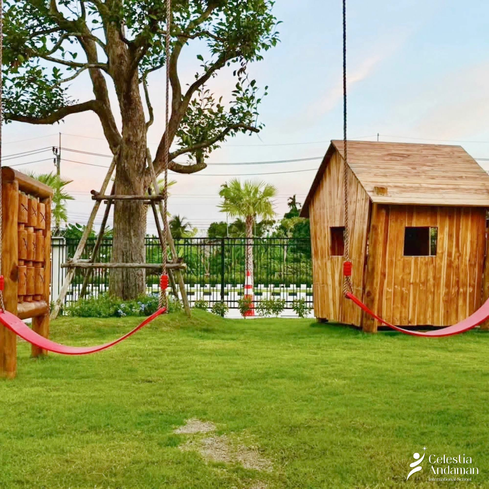

Nature-connected
Children notice, explore and care for the world around them.
 Reference image · publication approval pending
Reference image · publication approval pendingCelestia Andaman International School · Phuket
A warm school community where curious minds, kind hearts and confident learners grow through relationships, experience and purpose.
Explore CAIS
Understand the values and relationships behind daily learning.
02Curriculum & ageExplore the learning stages and find the right starting point.
03School lifeSee how nature, community and purposeful experiences come together.
04Visit the schoolSpeak with Admissions and arrange a conversation in person.
Events & announcements
A distinctive learning community
CAIS brings learning close to children through caring relationships, meaningful experiences and a strong connection with the natural world around Phuket.
Explore the learning approachChildren notice, explore and care for the world around them.
Families and educators contribute to a welcoming learning community.
Confidence, kindness and curiosity grow alongside academic foundations.

Reference image · publication approval pendingLearning in action
Stories from classrooms, outdoor learning and the school community help families understand what learning feels like—not only what the programme is called.
Explore school lifeMeet the school
A visit is the clearest way to meet the people, experience the environment and ask questions about your child.
Why CAIS
A close-knit international school community that values joyful learning, thoughtful guidance and each child’s individual path.

Reference image · publication approval pendingOur direction
This proposed direction will be replaced with the school’s approved vision before publication.
This proposed direction will be reviewed against the school’s official educational philosophy.
Our values in practice
Learning experiences invite children to investigate and make connections.
Relationships create the confidence to participate, try and grow.
Children build independence through meaningful choices and guidance.
The people behind the school
Approved names, roles, biographies and portraits will be added after school confirmation.
Biography and educational perspective to be supplied.
Role title, biography and curriculum responsibility to be confirmed.
Contact role and family support process to be confirmed.
Continue exploring
Curriculum & age
Official curriculum wording, age bands, class mapping, school hours and availability will be confirmed with the school before publication.
Age & stage map
The final page will show the exact age-to-class map used by Admissions, so families can understand where to begin.
How learning develops
Children learn best when they feel safe, known and ready to participate.
Play, questions, projects and outdoor experiences make learning meaningful.
Educators observe, guide and communicate each child’s development.

Reference image · publication approval pendingFit before form filling
Start with a simple question about the right stage, availability or learning environment.
Ask about the right stage
Reference image · publication approval pendingActivities connect observation, language, creativity and problem-solving.

Educators support children through attention, calm routines and meaningful feedback.

Movement, imagination and quiet moments all have a place in the day.
Outdoor learning partnerships
Future partner profiles can show how approved organisations, educators and locations extend learning beyond campus.
Partner name, learning purpose, safeguarding approach and activity evidence to be confirmed.
Partner name, shared activity and connection to learning outcomes to be confirmed.
Experience it directly
Admissions
Ask about age fit, availability and the school environment, then plan the next step with the Admissions team.
Arrange a suitable time to see the environment and meet the team.
Request a visit →Documents, assessment, fees, decisions and acceptance steps will be published after confirmation.
Admissions information being prepared
Articles
A growing library for families who want to understand how young children learn, grow and feel at home.
Connect one real activity to observation, language, creativity or problem-solving.
Author and evidence requiredExplain a school practice through an educator’s voice and an approved example.
School approval requiredShare the practice, purpose and responsible educator after programme confirmation.
Programme confirmation requiredEnquire / Visit
Ask about your child’s stage, availability or a school visit.
Open in Google Maps